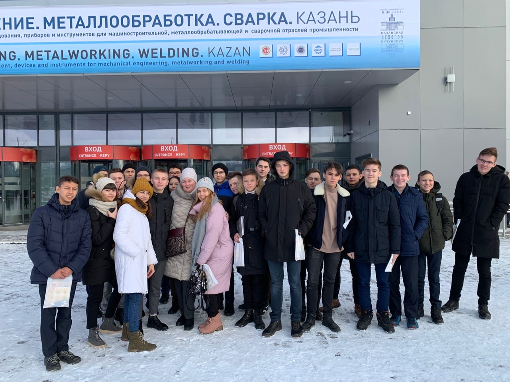

ГАПОУ "Международный центр компетенций - Казанский техникум информационных технологий и связи"
ГАПОУ "Международный центр компетенций - Казанский техникум информационных технологий и связи"
О моей группе.

Выпускник данной специальности готов к профессиональной деятельности в качестве техника по компьютерным системам в области: совокупности методов и средств по разработке и производству компьютерных систем и комплексов; эксплуатации, технического обслуживания, сопровождения и настройки компьютерных систем и комплексов; обеспечения функционирования программно-аппаратных средств защиты информации в компьютерных системах и комплексах. В группе 115-КСК учатся 25 человек под руководительством куратора Юлии Шаяздановны.
На главную. |